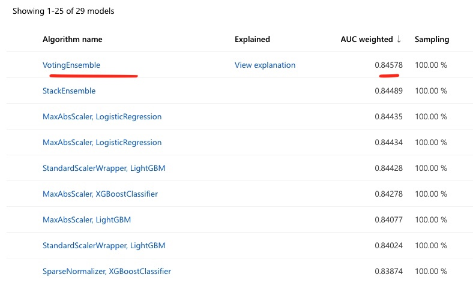
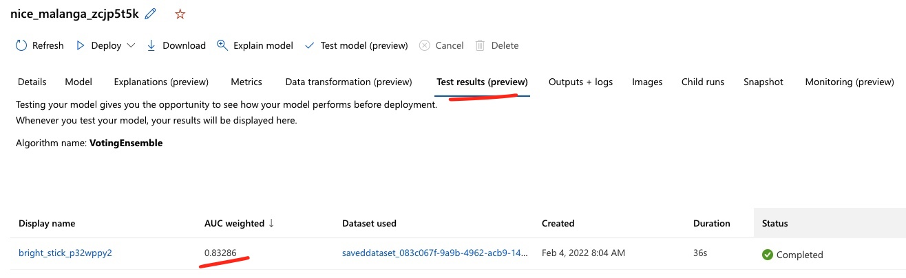
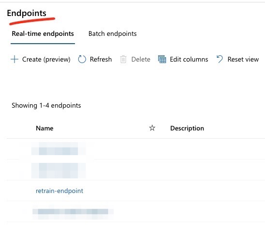
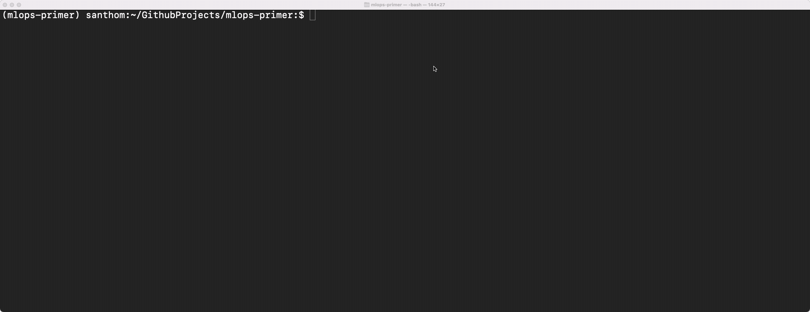

Three Months Later…
Contents
Three Months Later…¶
A few months into the use of the churn model, the business is pleased at some of the early progress. Though the churn rate has not dramatically improved, this was largely expected in the short-term. On the positive side, the marketing team is aggressively using the model to prioritize outreach and learn customer pain points that may lead to churn. This is exactly the short-term cultural push the business is looking to drive as other processes and systems modernize to enhance the customer experience.
The MLOps team is encouraged by this progress. However, three months have passed since the initial model was put in operation. While no significant model performance degradation has occurred, the MLOps team would like to ensure the model in operation is not based on data that is older by three months. As before, this requires taking the most recent snapshot of customer activity and labeling the ‘ground truth’ for which customers have churned (at that point in time, as per the established definition).
Necessary Steps¶
Artifact the new batch of data. The new batch of data (the
Retrain Dataset) needs to be registered in the workspace. This helps with data lineage and reproducability of results. This dataset contains the same attributes, and relative relationship of churn as theTransformed Training Baseline Dataset. More details on how this was created is in the Background Context section below.Train the model. With the
Retrain Dataset, a new training run using AutoML can be triggered to find the best model. The results of the various models evaluated is shown below: Check the test results. In the prior section, when we created a pipeline, we also had a discrete step to breakout training and test datasets, based on a 90/10 ratio. In this approach, that split can be specified as part of the AutoML configuration. Once the training is done, an automatic testing run is triggered using the best model. Results can be viewed in the studio experience. 
Create an endpoint. To support the business, the best model out of this run can be used to create the
retrain-endpoint. This will provide a real-time endpoint to test predictions against the new model. 
Other Considerations¶
Pipelines vs. Raw Scripts¶
In most scenarios, re-using the original pipeline would be the best practice for re-training. If you recall, in the Model Training section, this was the suggested best practice. Pipelines help preserve the consistency of the data transformations and the reproducibility of the process. However, one can also train with consistent use of versioned scripts without a pipeline, preserving data lineage, tracking, and experiment recreation. To show this optionality, this new model is triggered through scripts that call the AutoML configuration to train the best model.
Comparing the two models¶
Given that model performance never degraded significantly and the real driver for the re-train was to avoid a model derived off stale data, in theory, the retrained model should be relatively consistent with the baseline model.
To test this, we can run two operations:
Score the new data (
Retrain Dataset) on the old model endpoint (baseline-model-endpoint). If this is relatively consistent (i.e. no major data drifts), the accuracy should be relatively close.Score the old data (
Transformed Training Baseline Dataset) on the new model endpoint (retrain-endpoint).
By scripting these two operations, we find that the error rates are about ~20% which is fairly consistent. Based on this, both models are close in predictive accuracy largely because they are based on fundamentally similar distributions and attribute relationships. With this, the new re-trained model can be promoted to be the production model for the marketing team. 
Background Context¶
To construct this scenario, the
Retrain Datasetwas a simulated version of the original data. The overall churn and attribute relationships were preserved from the baseline dataset while the customer count was randomly assigned within certain limits. More details are in themodelingfolder of the repo.As mentioned in the first section, establishing ground truth for a customer that has actually churned is not always straightforward. One can standardize a definition (for example: “a customer has churned if they have not used the service for greater than 30 days”), but in some cases, you may know a customer has churned sooner (support calls, bad customer experience). Customers who were previously classified as ‘churned’ may also return. For the purposes of the above illustration, we are ignoring these factors.